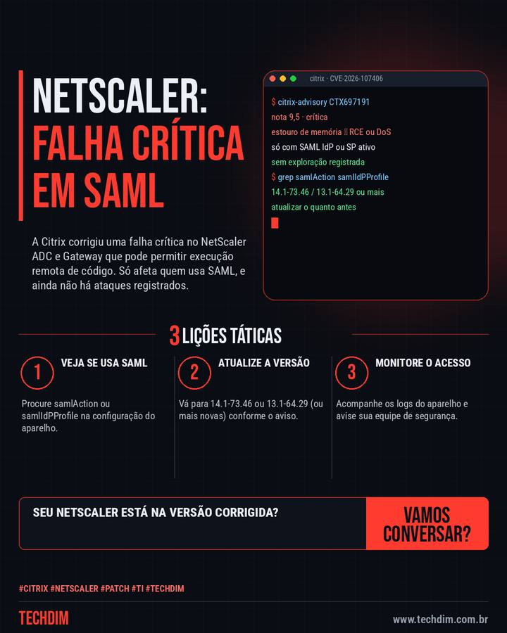

Alerta de segurança
Citrix NetScaler: falha crítica (nota 9,5) pode permitir execução remota de código em SAML
A Citrix corrigiu uma falha crítica no NetScaler ADC e Gateway que pode permitir execução remota de código. Só afeta quem usa SAML, e ainda não há ataques registrados.

O que aconteceu
- CVE-2026-107406 (nota 9,5): estouro de memória no NetScaler ADC e Gateway que pode levar a execução remota de código ou queda do equipamento
- Só atinge aparelhos configurados como provedor (IdP) ou cliente (SP) de SAML. Procure 'authentication samlAction' ou 'samlIdPProfile' na configuração. Não há exploração registrada até agora
- Atualize para 14.1-73.46 ou superior, ou 13.1-64.29 ou superior (FIPS: 13.1-37.283). O Shadowserver vê cerca de 21 mil NetScaler expostos na internet
Usa NetScaler para login SAML? Confira a versão e atualize antes que apareça um ataque.
Por que importa
Falha crítica em equipamento de borda que fica exposto à internet; a janela para corrigir antes de exploração é agora.
Como se proteger
- Veja se usa SAML. Procure samlAction ou samlIdPProfile na configuração do aparelho.
- Atualize a versão. Vá para 14.1-73.46 ou 13.1-64.29 (ou mais novas) conforme o aviso.
- Monitore o acesso. Acompanhe os logs do aparelho e avise sua equipe de segurança.
Fontes consultadas
Mais do Radar de hoje
- Notícia de tecnologia Windows 11 24H2 Home e Pro perde atualizações de segurança em 13 de outubro
Leia também
Este texto resume as fontes citadas na data de publicação. Confira sempre o aviso oficial do fabricante antes de agir em produção.